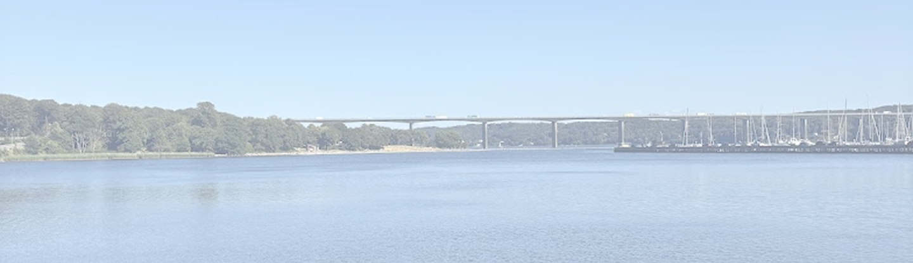
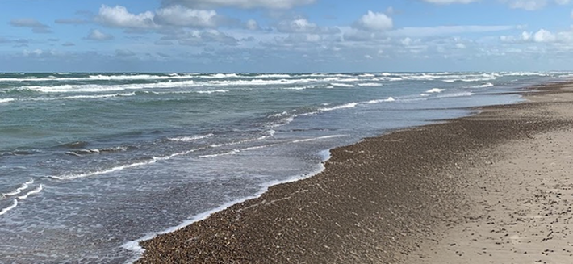
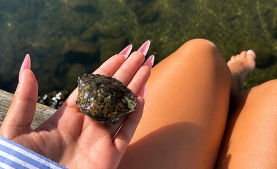
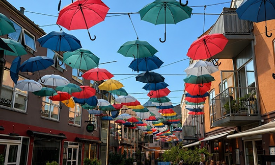
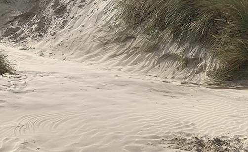
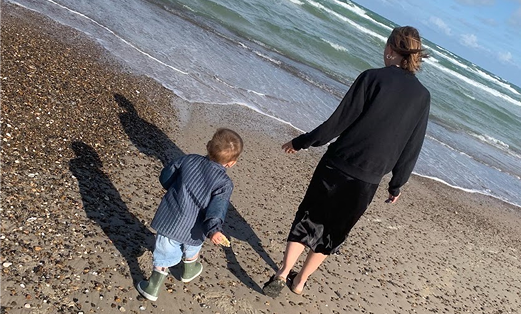
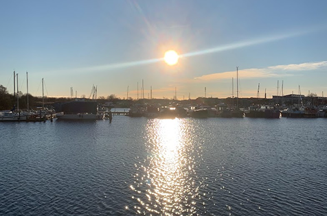

Hvad har du lyst til?

At komme væk
Luft, hav og nye omgivelser
Nogle gange er det bedste, du kan gøre, at skifte omgivelser, gå nye veje, og oplev hvor meget energi en kort tur kan give. Danmark er fuld af smukke steder der venter lige om hjørnet.




Ro i hovedet
Natur, stilhed og mental pause
Find roen i skovens stille stier, ved bølgernes bruseneller i de åbne landskaber. Her er plads til at trække vejret, slippe hverdagen og bare være til stede.


Hygge
Nærvær, varme og gode stunder
Oplev charmerende byer, hyggelige caféer, lokale gårdbutikker og overnatningssteder med sjæl. Hygge handler om de små øøjeblikke - en god kop kaffe, en smuk udsigt og tid til at nyde det, der er lige foran dig.




At opleve noget
Nye steder, store øjeblikke
Udforsk slotte, museer, naturoplevelser og kulturelle perler. Der er altid noget nyt at opdage - uanset om du er til historie, kunst, aktiv ferie eller unikke udsigter.


Tid sammen
Familie, venner og nærvær
Skab minder med dem, du holder af. Uanset om det er en aktiv dag i naturen, en strandtur, et besøg på en gård, eller en hyggelig weekend, er der masser af muligheder for oplevelser, der bringer jer tættere sammen.




Sol og sommer
Varme dage, lyse nætter
Nyd strandene, de hyggelige havne, øerne og alle de sommeroplevelser der gør Danmark helt særlig i de varme måneder. Her er plads til badeture, is i solen, og lange aftenener med udsigt.